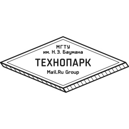
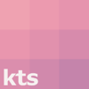

Олег Морозенков
Образование
МГТУ им. Н.Э. Баумана
2016–2018, Машиностроительные технологии. (перевелся после 2 курса)
2018–2021, Информатика и системы управления.
 Технопарк Mail.Ru
2016–2018, Системный архитектор.
Введение в машинное обучение / НИУ ВШЭ
Авг 2016, 7 недельный курс.
Опыт работы
 KTS Studio
Июль 2017 – текущее время (1,5 года).
Работаю бекендером на Go/Python и дата саентистом.
Опыт как Go бекендера
Разрабатывал проект с требованиями к низким задержкам и высокой доступностью бекенда. Для этого использовалась связка из Tarantool и последующего архивирования данных в Cockroach. Для реплицирования данных в Tarantool использовался tarantool/vshard.
Разрабатывал бекенд сайта TrainMyData — платформы для соревнований по машинному обучению. Бекенд использует PostgreSQL как основное хранилище и Tarantool для очередей.
Технологии: fasthttp postgresql tarantool cockroach rpm
Опыт как Python бекендера
Занимался проектом по интеллектуальной генерации презентаций. Проектировал архитектуру и был главным бекендером, руководил стажером. Решал проблемы оптимизации потребления памяти в Python.
Написанные open-source библиотеки во время работы: gentle-python-pptx
Технологии: asyncio aiohttp postgresql mongodb rpm
Опыт как дата саентиста
Разрабатывал сервис, который предсказывал, какие рыночные стратегии будут прибыльными на следующий день. Использовал рекурентные нейронные сети и выводил дополнительные эвристики для улучшения результата.
Занимался проектом разгрузки техподдержки с помощью чатботов. Разбирался с обработкой опечаток и эксперементировал с различными текстовыми моделями, таких как, например, doc2vec.
Open-source библиотеки: kts_linguistics 17+
Технологии: tensorflow keras
Сопутствующий опыт
Актуальные события — сервис ВКонтакте
Проект разрабатывался как диплом в Технопарке Mail.Ru и разрабатывается дальше. Имеет около 4000 ежедневных уникальных посетителей.
В проекте спроектирована микросервисная архитектура — сервисы написаны на Go, Python и Kotlin. Разрабатывал микросервисы связанные с рекомендациями, антиспамом, статистикой и авторизацией.
Настраивал blue-green деплой с использованием Ansible для бесшовного обновления микросервисов под нагрузкой.
Технологии: golang python postgresql clickhouse gensim ansible
Научные статьи
The hybrid chatbot system combining Q&A and knowledgebase approaches
Июнь 2018. Статья проиндексирована в Scopus.
Рассматривается разработка гибридной системы чат-ботов, которая может так и отвечать по FAQ, так и вести диалог с использованием базы знаний. Для базы знаний используется метаграфовая модель.
Деятельность
Менторство в Технопарке Mail.Ru
Фев 2018 – текущее время.
Помогаю студентам с фронтендом и c бекендом на Go, провожу код-ревью.
Open-source проекты и достижения
tgbot-cpp
C++ библиотека для Telegram bot API.
Гитхаб 200+ Документация
kts_linguistics
Библиотека для работы с лингвистикой.
Она включает в себя фонетизацию русского текста, исправление опечаток, репозитории с русскими текстами и словари синонимов.
Гитхаб 17+
Voice to vector
Сравнивание голосов на одинаковость. Преобразование голоса в вектор.
Делали преобразование Фурье для получения спектрограмм. Использовали триплет из сверточных нейросетей для получения вектора.
Презентация Гитхаб 13+ Гитхаб c дальнейшими исследованиями 8+
GoToHack2 + MTS
Кейс от МТС: предсказывание лайков, репостов и лайков от репостов в группе TalentEdme.
Сравнивали содержимое постов и интересов пользователя при помощи LDA.